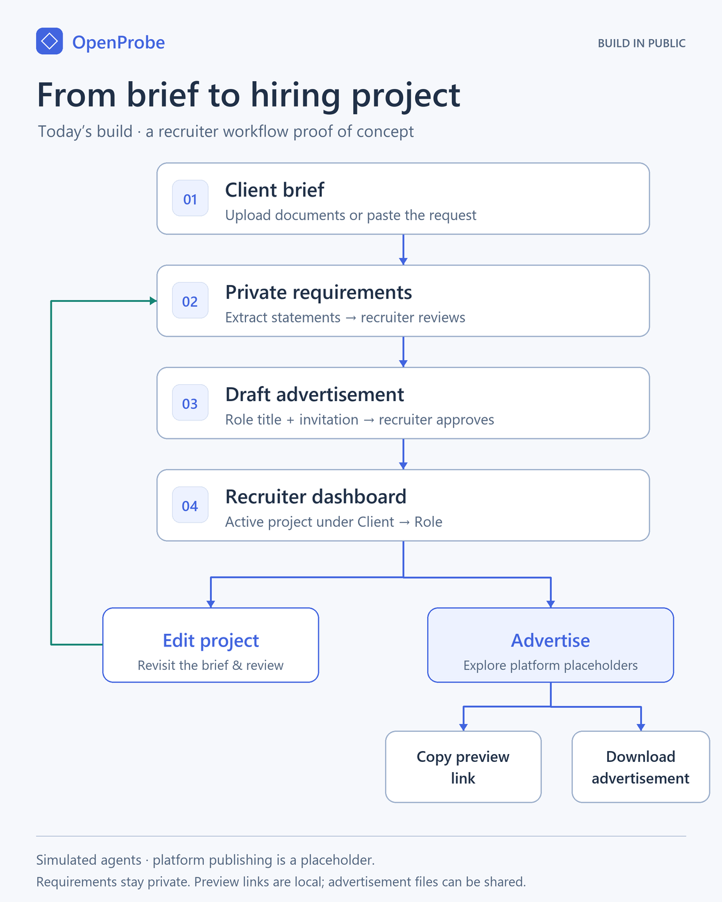

Build in Public, Day 3: From Brief to Hiring Project
Hiring is broken on both sides of the table, and I want to fix it in the open.
“It’s impossible to interview them all!” (a recruiter)
“1,000 résumés sent, 10 interviews, no feedback.” (an applicant)
It’s the same process, with two very different frustrations.
The idea
My rule is no generative AI unless it’s genuinely needed. With that in mind, what if:
- the recruiter posts just the role, with no laundry list of tech stacks?
- we measure an applicant’s potential, not just their keywords?
- applicants are judged across several touchpoints, not one interview?
- hiring feels like a game, run as an online competition?
- applicants are dropped into a simulated, scenario-based environment to show they can actually do the role? This is where AI earns its place.
- every applicant walks away with feedback, so their time is never wasted?
Day 3: from brief to hiring project
On Day 2 I set up the seats for recruiters and applicants. Today I built the step before that, where the hiring company hands over its job requirements and the recruiter turns them into a project. A project is a self-contained space that holds everything about that role.

- Client brief. Upload documents or paste the request.
- Private requirements. Requirement statements are extracted, and the recruiter reviews them. They never appear in the ad.
- Draft advertisement. Just the role title and an invitation, and the recruiter approves it.
- Recruiter dashboard. The active project is filed under Client, then Role.
From the dashboard, Edit project loops back to the brief and review, so a changed client request doesn’t mean starting over. Advertise shows job-platform placeholders. For now the recruiter can copy a preview link or download the advertisement.
Why keep the requirements private?
Applicants describe the role in their own words, through their proudest work, a typical week and a hard problem. The private requirements become the yardstick. We compare what someone actually does with what the client needs, instead of checking whether they repeated the ad back.
Status
- This is a proof of concept.
- The agents are simulated.
- Platform publishing is a placeholder.
- Requirements stay private.
- Preview links are local, and advertisement files can be shared.
Get involved
OpenProbe is open source under the MIT licence. Explore the repo on GitHub, open an issue or tell me where this would break in a real agency.
Recruiters and hiring managers: if the requirements stay hidden, what’s the one thing an ad still has to say for good people to apply?
Outside my day role, I build NBA models for NoFlightZone. More posts are at travisjohn.github.io.